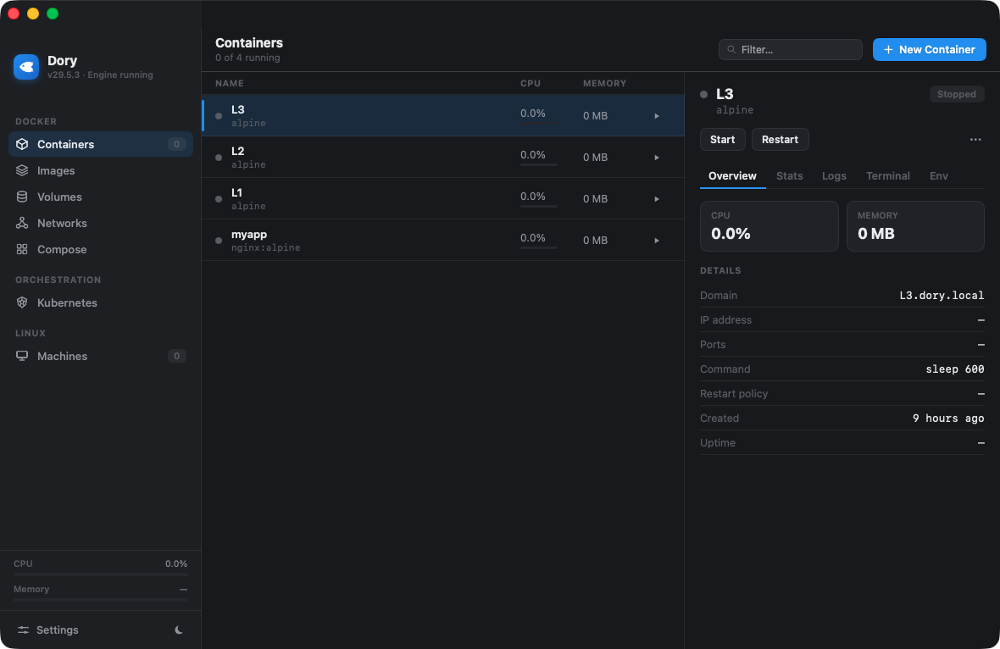

Docker & Linux containers, native to your Mac.
Dory is a free, open-source alternative to OrbStack and Docker Desktop — one lightweight SwiftUI app that runs every container in a single shared VM, for a fraction of the memory.

Why Dory
Everything you run today, lighter.
Full Docker Engine API compatibility, a native interface, and the OrbStack conveniences — without Docker Desktop's footprint.
Lean by design
One shared Linux VM for all your containers instead of one VM each — measured ~4.7× less memory than per-container VMs.
Drop-in Docker API
Dory hosts a Docker-compatible socket at ~/.dory/dory.sock, so the real docker and docker compose CLIs just work.
Native, not Electron
A single SwiftUI app — fast launch, low overhead, and proper light & dark themes that feel at home on macOS.
Automatic domains & HTTPS
Every container gets a *.dory.local domain with locally-trusted HTTPS — no port juggling, no manual certs.
Compose, K8s & machines
compose up with health-aware ordering, one-click Kubernetes (k3s), and full Ubuntu / Debian / Fedora / Alpine Linux VMs.
Free & open source
GPL-3.0 licensed. No paid tier, no account, no telemetry — and the whole engine is dependency-free Swift.
The footprint
One shared VM. Not one per container.
Spinning up a separate micro-VM for every container adds up fast. Dory runs them all in a single persistent VM — like OrbStack — so memory stays flat as your stack grows.
Two containers, measured.
Running two containers in Dory's shared VM versus the same two as separate per-container VMs.
Get started
Up and running in a minute.
Install with Homebrew, or grab the notarized app from GitHub Releases.
$ brew tap Augani/dory https://github.com/Augani/dory
$ brew install --cask dory
or download the latest release →
Star Dory on GitHub